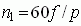
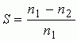
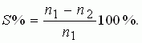

ТЕОРЕТИЧЕСКИЕ ПОЛОЖЕНИЯ И РАСЧЁТНЫЕ ФОРМУЛЫ
1. УСТРОЙСТВО И ПРИНЦИП ДЕЙСТВИЯ АД
Наибольшее применение в промышленности получили трёхфазные асинхронные двигатели (рис. 19.1). Это объясняется тем, что они просты по конструкции, дешевы, надёжны в работе, имеют высокий КПД при номинальной нагрузке, выдерживают значительные перегрузки, не требуют сложных пусковых устройств.

Наряду с преимуществами АД имеют ряд недостатков, основными из которых являются: низкий коэффициент мощности (cosφ) при неполной нагрузке (при холостом ходе cosφ0 = 0,2...0,3); низкий КПД при малых нагрузках; малоудовлетворительные регулировочные характеристики.
Основными частями АД являются статор и ротор, отдалённые друг от друга воздушным зазором (0,3...0,5 мм). Их сердечники собраны из листов электротехнической стали. На внутренней части поверхности статора и на внешней ротора выштампованы пазы, в которые уложены обмотки. Сердечник статора помещён в корпус, на котором закреплены клеммы статорной обмотки, состоящей из трёх самостоятельных обмоток, сдвинутых в пространстве на 120˚ (рис. 19.2). Сердечник ротора укреплён непосредственно на валу двигателя или на ступице, надетой на вал.

Обмотка ротора может быть выполнена короткозамкнутой или трёхфазной аналогично обмотке статора. Короткозамкнутая обмотка ротора выполняется в виде "беличьего колеса", состоящего из стержней и замыкающих их на торцах колец (рис. 19.3, а и б). У АД с фазным ротором (см. рис. 19.1, в) одни концы обмоток 2 ротора 1 соединяются с контактными кольцами 3, расположенными на валу двигателя, а другие - соединены в звезду (рис. 19.3, в и г). Контактные кольца 3 соединяются с контактами неподвижной части машины с помощью щёток 4 и щёткодержателей. К ним подключают пусковой реостат 5.

Принцип действия АД основан на взаимодействии вращающегося магнитного поля статора (неподвижная часть машины) с токами, индуктируемыми в роторе (подвижная часть).
Рассмотрим принцип создания магнитного поля машины. Трёхфазная обмотка статора питается от трёхфазной системы напряжения (см. рис. 19.1, а) с фазными напряжениями U1ф. Так как три фазные обмотки (сдвинутые в пространстве одна относительно другой на 120( (рис. 19.2) и имеющие число витков w1) замкнуты, то в них протекают токи i1, в результате создаются три МДС F1 = i1w1. Под действием этих трёх МДС образуется вращающееся магнитное поле, результирующий вектор магнитного потока которого Фр = 3/2Фm, где Фm - магнитный поток, созданный фазной МДС F1.
Согласно закону электромагнитной индукции в обмотках статора и ротора наводятся ЭДС е1 и е2. Цепь обмоток ротора всегда замкнута, поэтому в фазных обмотках ротора протекают токи i2, значения которых зависят от нагрузки. Согласно закону Ампера от взаимодействия токов ротора с вращающимся магнитным полем статора на валу двигателя возникает вращающий момент М, и, если он больше момента сопротивления Мс на валу, то ротор приходит во вращение. Согласно правилу Ленца токи ротора, как и создаваемое ими вращающееся магнитное поле, воздействуют на токи статорных обмоток и магнитный поток Фр машины, вызывая рост тока статора, чтобы скомпенсировать размагничивающее действие токов роторной обмотки.
Частота вращающегося магнитного поля статора (в об/мин) определяется по выражению: , где f1 - частота напряжения сети; р - число пар полюсов машины (в частности, три обмотки статора создают одну пару полюсов, шесть обмоток - две пары и т. д.).
Рассматриваемая машина называется асинхронной потому, что в ней частота вращения ротора n2 не равна частоте вращающегося магнитного поля статора n1. Если бы эти частоты были равны, то магнитный поток статора был бы неподвижен относительно вращающегося ротора, и в обмотках ротора не индуктировались бы ЭДС, не было бы в них токов и не возникал бы вращающий момент на валу.
Разность частот вращения поля статора и ротора называют частотой скольжения ns = n1 - n2, а её отношение к частоте n1 - скольжением S, т. е.
 или (выраженное в процентах) 
Диапазон изменения скольжения в асинхронном двигателе 1 ≥ S ≥ 0; при пуске S = 1, при холостом ходе S = 0,001...0,005, при номинальной нагрузке S = 0,03...0,07.